TRIAXIS Backup & Editor
Back up, tweak and switch the sounds of your Mesa/Boogie TriAxis from your computer, without needing to understand MIDI. Everything stays on your computer: no internet and no sign-up.
1. Before you start
- A computer with Windows 10 or 11. Just open
TriAxisBackupEditor.exe: nothing to install. - A way to connect the TriAxis to the computer:
- a USB-MIDI cable (USB on one end, two round plugs on the other), which is the most common option;
- or an audio interface with MIDI (RME, Focusrite, etc.) and two MIDI cables.
- Close other music programs (DAW, editors) while you use this one.
2. Simple and advanced mode
At the top of the window there is a Simple | Advanced switch.
- Simple (default): three guided paths, My sounds, Backup and Play, with no technical terms. It is meant for almost everyone.
- Advanced: all the tools (library with comparison, full editor, hexadecimal view, log, CC buttons, MIDI learn, transfer settings). It is for people who already work with MIDI or own a pedalboard such as the FCB1010.
Safety is the same in both modes. The program remembers the last mode you used.
3. First time: the setup wizard
The first time, the program opens a 4-step wizard. You can run it again whenever you like, from the Set up connection button at the top or the link on the home screen.
Step 1: the device
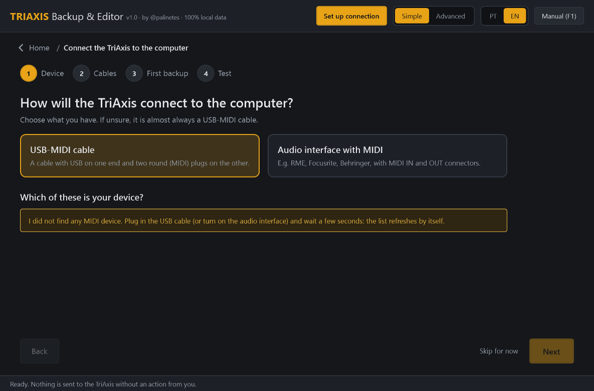
Step 2: the cables
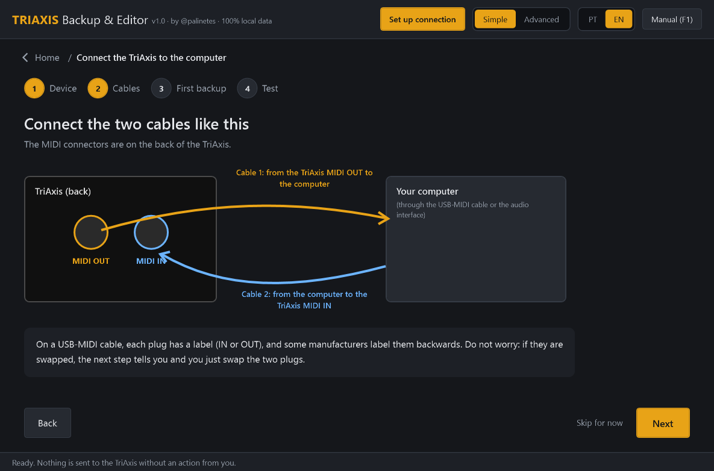
On USB-MIDI cables the IN/OUT labels on the plugs are sometimes wrong. If they are swapped, the next step tells you, and all you do is swap the two plugs.
Step 3: the first backup
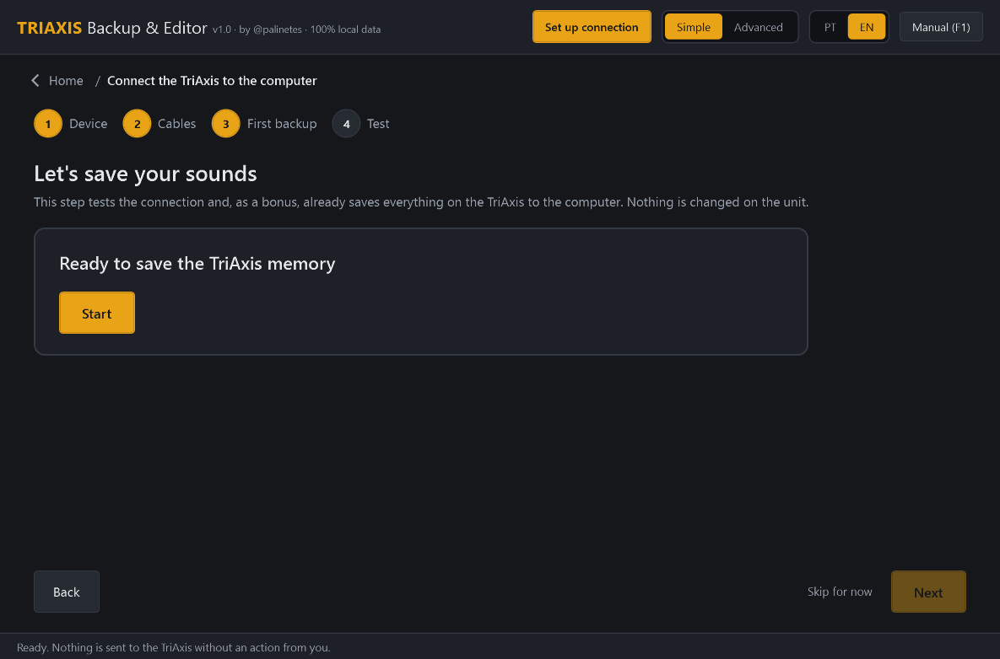
This step tests the connection and, as a bonus, already saves all your sounds on the computer. Nothing is changed on the TriAxis.
Step 4: the send test
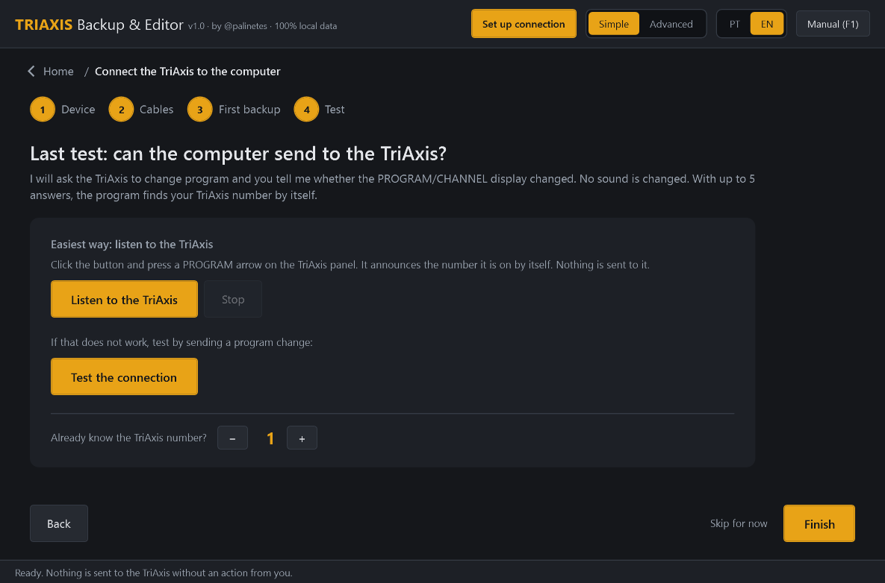
The "TriAxis number" is the MIDI channel set on the unit. You do not need to know it. The easiest way is to listen to the TriAxis: click Listen to the TriAxis and, on its front panel, press one of the ◀ ▶ arrows under the PROGRAM/CHANNEL window. The TriAxis announces its number and the program remembers it. This only listens; nothing is sent to the unit.
If it hears nothing, or if you want to check that the computer can also send to the TriAxis, use the send test:
- Click Test the connection. The program sends the program change to all numbers at once.
- If the TriAxis display does not change, the problem is the connection (cable, port, or a pedalboard in the middle of the chain), and the program shows what to check.
- If it changes, the connection works. With at most 4 "did it change? yes/no" tests, the program finds the number by itself.
If, in Play, the TriAxis does not change program, use the link "TriAxis won't change program? Find the problem", which opens this test directly.
4. Home screen
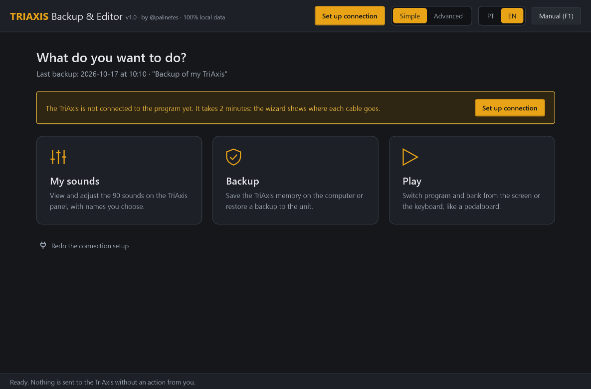
5. My sounds
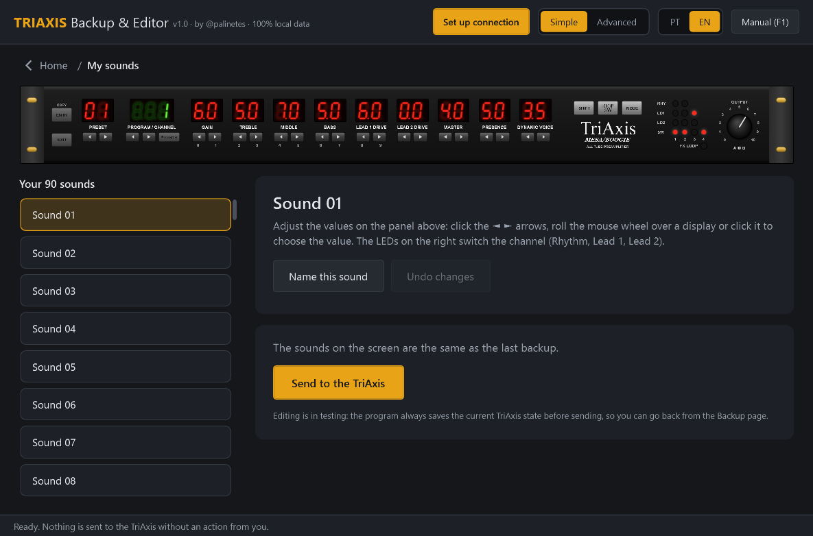
- Pick the sound in the list on the left, or with the PRESET arrows on the panel.
- To change a value, click the ◄ ► arrows under the display, roll the mouse wheel over it, or click it and choose the value from the list.
- The LEDs on the right switch the channel (Rhythm green/yellow, Lead 1, Lead 2) and turn the FX LOOP and the SW 1–4 outputs on or off.
- Name this sound: for example "Clean base" or "Solo". Names stay on the computer only, because the TriAxis does not store names. They also show up on the Play pedalboard.
- Undo changes puts everything back as it was in the backup.
6. Send to the TriAxis
Use Send to the TriAxis (in My sounds) or Restore to the TriAxis (in Backup). It is always three steps:
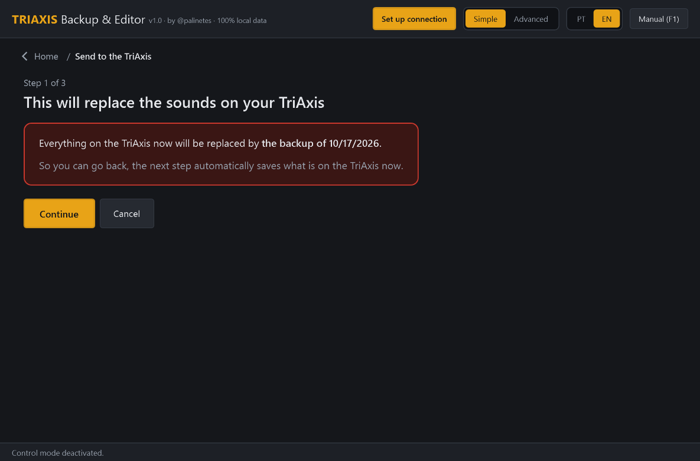
- Warning: click Continue, or Cancel if you changed your mind.
- Safety backup (mandatory): press SHIFT + PRESET ▼ on the TriAxis. The current state is saved.
- Confirm: click Yes, replace.
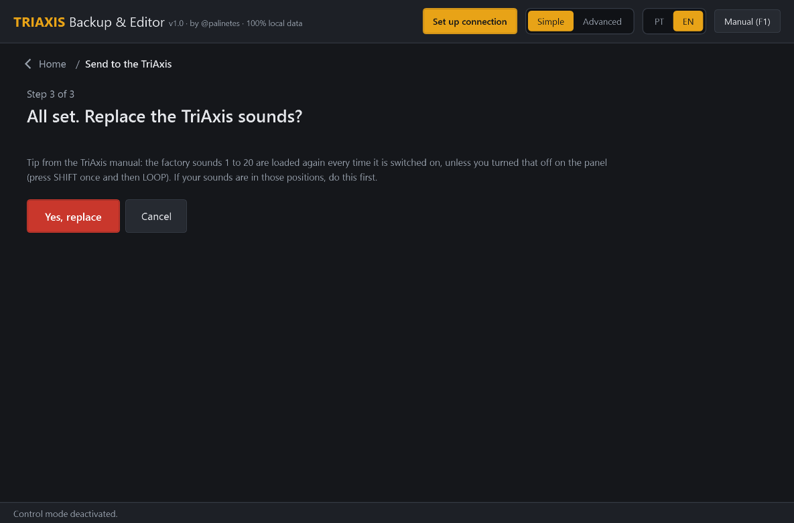
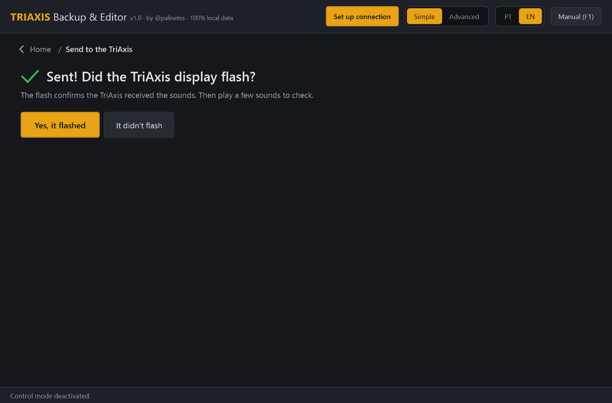
If the display does not flash, click It didn't flash to see what to check (usually the cable that goes into the TriAxis MIDI IN) and try again. Your old sounds are still saved.
Tip from the TriAxis manual: the factory presets 1 to 20 are loaded again every time the unit is switched on, unless you turned that off on the panel (press SHIFT once, then LOOP). If your sounds live in those positions, do this first.
7. Backup
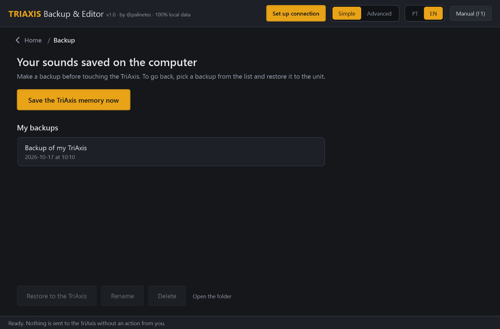
- Save the TriAxis memory now: give it a name (e.g. "Gig sounds") and press SHIFT + PRESET ▼.
- Restore to the TriAxis: pick a backup from the list and follow the 3 steps in section 6.
- Rename, Delete (the file goes to the Windows Recycle Bin and can be recovered) and Open folder (
Documents\TriAxis Backups). - Backups marked edited were created by the My sounds page.
Tip: now and then, keep a copy of the backups folder on a USB stick or in the cloud.
8. Play
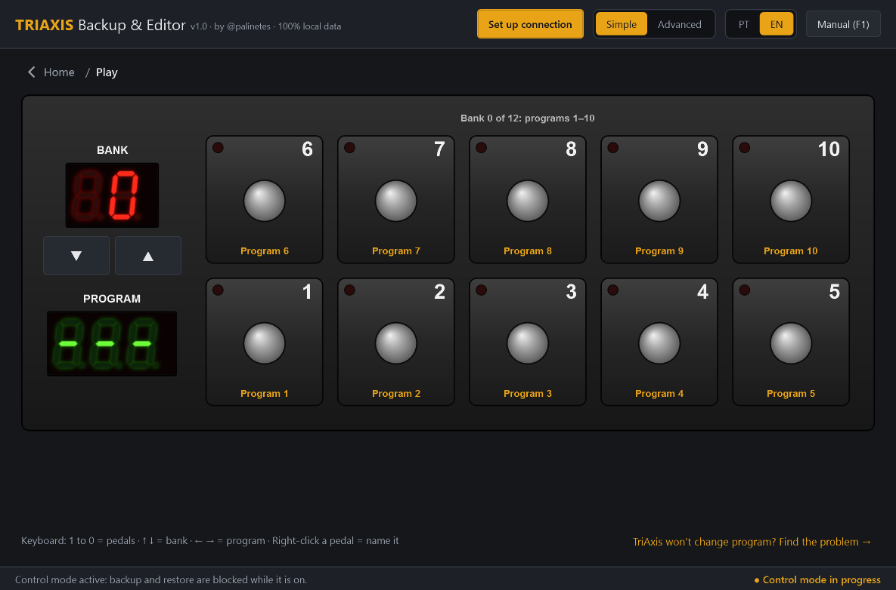
- Click a pedal, or press 1…9 and 0 on the keyboard, to change program. The LED of the active pedal lights up.
- BANK ▲▼ (or ↑ ↓) switches the group of 10 programs: bank 0 has programs 1 to 10, bank 1 has 11 to 20, and so on.
- ← → go to the previous or next program.
- The pedals show the program number. The program cannot yet read, from the backup, which sound each program calls on your TriAxis; once it can, the pedals will show the sound name.
- Changing program does not change any sound: it is like pressing the PROGRAM/CHANNEL arrows on the TriAxis.
9. Advanced mode
Turn on the Advanced switch at the top. The tools appear in tabs:
| Tab | What it is for |
|---|---|
| Connection | Choose MIDI IN and MIDI OUT separately and test the connection (listen only, nothing is sent). |
| Control | Full pedalboard: MIDI channel, 4/5/8/10 pedals per bank, CC buttons, MIDI learn from a pedalboard connected to the PC (e.g. FCB1010) and Program Change forwarding. The TriAxis does not switch channel, FX Loop or switches by CC (see the note in the tab). |
| Backup / Restore | Backup with technical details and restore with block size and interval settings. The confirmation asks you to type RESTORE (in the Portuguese interface, RESTAURAR). |
| Library | Search, import, CSV export and byte-by-byte comparison between two backups. |
| Editor | The TriAxis panel with the list of changes byte by byte and the matrix of the 90 presets. |
| View dump | Hexadecimal/ASCII, presets and program map. |
| Settings | Folder, timings, log, language, names of outputs and loops (e.g. 2:90 functions) and dump request. |
| Log | Technical record of the session (devices, bytes, hashes, errors). |
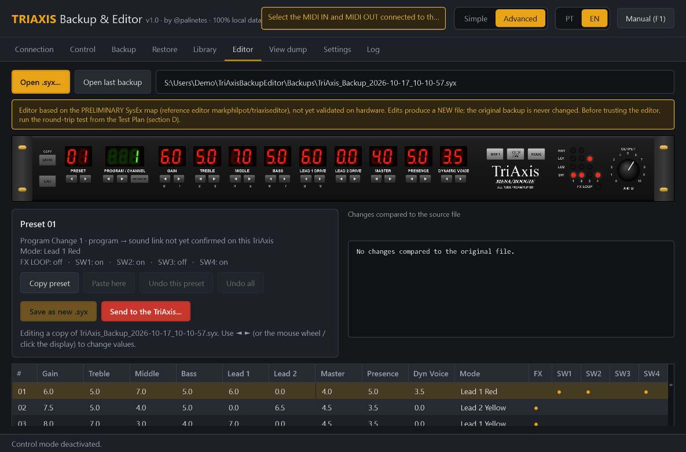
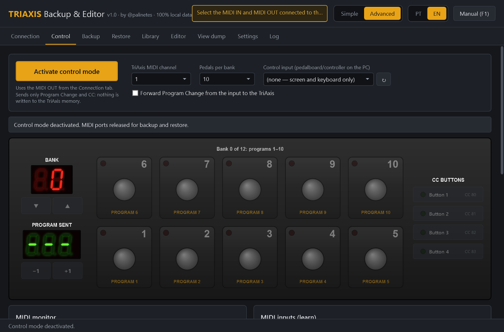
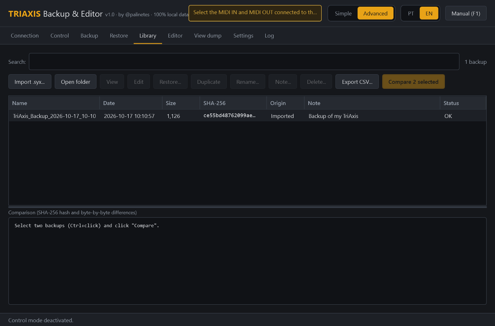
10. TriAxis + Simul-Class 2:90: loops and outputs
With the 2:90, the TriAxis switch outputs (SW1–SW4) and the FX LOOP usually drive functions of the power amp and the rack.
The 2:90 has three Voicing Switch jacks (rear panel, lower left corner), and each one lights an LED on the front. According to its manual, TriAxis switches 1, 2 and 3 go into those jacks (labeled DEEP EXTEND, MODERN and HALF DRIVE on the rear panel), with any cable (it does not need to be shielded). The state of each switch is stored in each sound.
- Deep: lower, "breathier" lows and warmer, more three-dimensional highs; works on clean and distorted sounds.
- 1/2 Drive: the output drops by about half, the sound gets softer and springier, and the power section gives more gain. A great trick for choruses and solos.
- Modern: more attack in the mids and highs and tighter lows, with a little more volume. Together with 1/2 Drive the volume barely changes.
In Advanced → Settings → Outputs and loops, the Use the Simul-Class 2:90 names button fills in SW1 = Deep, SW2 = Modern, SW3 = 1/2 Drive, the order of the jacks on the 2:90 rear panel (Deep Extend, Modern, Half Drive, left to right). Check that your cables are wired this way, or adjust the names.
| What | Where it lives | In the program |
|---|---|---|
| FX LOOP and SW1–SW4 on/off per sound | Inside each sound | Editable on the panel (SW and FX LOOP LEDs). Name the outputs in Advanced → Settings → Outputs and loops. |
| General loop and output configuration | In the final region of the memory (dump positions 995 to 1124), not yet decoded | It is saved and restored intact by backups, but not yet editable. Use the routine below to discover it. |
Routine to discover the general configuration (backups only)
- Make backup A and write the current configuration in its name.
- On the TriAxis, change just one loop or output setting, following the unit's manual.
- Make backup B and write what changed in its name.
- In Advanced mode → Library, select A and B (Ctrl+click), click Compare and note the
End +Npositions (the region after the presets). - Put the setting back to its original value, make backup C and check that C is identical to A.
| Setting changed | Before → after | Position(s) | Bytes A → B | C = A? |
|---|---|---|---|---|
| e.g. loop mode | … | End +… | … → … | yes/no |
11. If something does not work
| What happened | What to do |
|---|---|
| My device is not in the list | Plug in the USB cable and wait a few seconds; try another USB port if needed. The list refreshes by itself. |
| "Nothing arrived from the TriAxis" | Check the cable on the TriAxis MIDI OUT. On a USB-MIDI cable, swap the two plugs. Hold SHIFT and press PRESET ▼. |
| "The transmission stopped halfway" | Try again. If it repeats, change the cable or the USB port (avoid hubs). |
| My sounds 1 to 20 go back to what they were when I power the TriAxis on again | According to the TriAxis manual, the factory presets 1–20 are loaded again every time it is switched on. To keep your own sounds in those positions, press SHIFT once and then LOOP on the panel (this turns the reload off). To use the factory sounds again: SHIFT and then MODE (this erases presets 1–20!). Make a backup first. |
| The TriAxis does not change program | In Play, click "TriAxis won't change program? Find the problem". The test tells you whether it is the cable or the number, and sets the number by itself. |
| I want to stop a backup that is receiving nothing | Click Cancel or close the program. Waiting for the TriAxis changes nothing on the unit, so it can be interrupted at any time. Only sending to the TriAxis asks you to wait until it finishes. |
| The display did not flash when sending sounds | Check the cable going into the TriAxis MIDI IN and take the pedalboard out of the chain. In advanced mode, increase the send interval. |
I have a .syx file saved from triaxiseditor.com | It opens normally. That site saves the backup with zero "padding" at the end (2,746 bytes); the program uses only the part the TriAxis understands (1,126 bytes) and never changes your file. When importing, it stores a clean copy. |
| "Could not use the interface" | Close the DAW and other music programs and try again. |
When asking for help, send the log file, located in %LOCALAPPDATA%\TriAxisBackupEditor\logs (or on the Log tab in advanced mode).
12. Shortcuts
| Key | Where | Action |
|---|---|---|
| F1 | Anywhere | Opens this manual |
| 1…9, 0 | Play | Pedals 1–10 |
| ↑ / ↓ | Play | Next / previous bank |
| → / ← | Play | Next / previous program |
| Mouse wheel | TriAxis panel | Changes the display value |
13. About
TriAxis Backup & Editor v1.0, by @palinetes.
The TriAxis memory map used for editing comes from the web editor by Mark Philpot (markphilpot/triaxiseditor, GPL-3.0, published at triaxiseditor.com). The code of this program was written from scratch. The parameter order was checked against the factory presets in the official TriAxis owner's manual.
Mesa/Boogie, TriAxis and Simul-Class are trademarks of their respective owners. This is an independent project, not affiliated with the manufacturer.